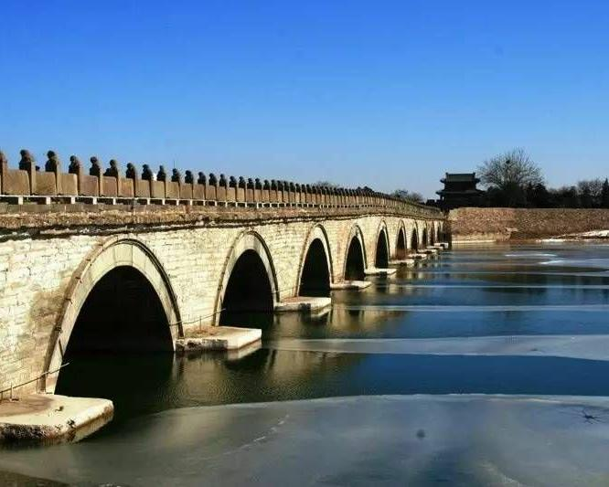
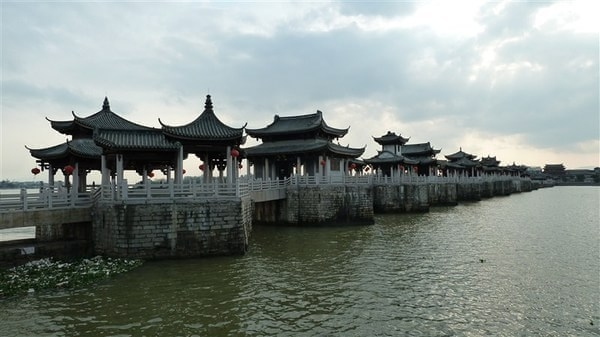

地理寻踪：中国古桥分布与地域风格
💡 提示：点击地图上的省份区域，右侧面板将展示该地名桥营建智慧与地域风貌
中国幅员辽阔，多样的自然地理环境孕育了各具特色的桥梁建筑风格。古人“因地制宜、就地取材”，展现了令人叹为观止的工程智慧。
历代造桥规模演变
点击上方图表中的朝代，溯源千年营建智慧
中国四大名桥

赵州桥
隋代 · 敞肩拱之祖
赵州桥
世界现存最早的敞肩石拱桥。通过在大拱上加小拱，减轻自重并极大增强泄洪能力。
洛阳桥
宋代 · 跨海梁桥先驱
洛阳桥
首创“筏型基础”与“种蛎固基”，利用牡蛎生长将石块凝成整体，展现古代生态智慧。

卢沟桥
金代 · 联拱石桥杰作
卢沟桥
以“卢沟晓月”闻名，桥柱上数百只石狮栩栩如生，其坚固结构历经数百年洪水依然屹立。

广济桥
宋代 · 启闭浮梁奇观
广济桥
世界最早的启闭式桥梁，“十八梭船廿四洲”结构集梁、拱、浮桥于一体，极具功能性。
数字化名桥
虚拟修复实验室
通过高精度三维重构，还原四大名桥内部营建密码。在这里跨越时空，近距离洞察每一块券石、榫卯的力学智慧。
- 毫米级结构还原
- 360° 全景沉浸式交互
- 移动端 AR 增强现实体验
杰出科学家
营建奇迹：桥梁科学成就

结构创新与力学应用
贯木拱（虹桥）结构：采用纵横木材互锁，无需桥墩即可跨越。悬链线拱：拱轴线与受力形态惊人吻合，实现材料最优载荷。

生态工程与基础处理
“种蛎固基”法：利用牡蛎钙化作用胶结桥基。“睡木沉基”法：在软土地基铺设木筏支撑巨量负重，历经千年不腐。

材料科学与施工技术
悬索桥演进：攻克金属冶炼与岩石锚固难题。趁潮架梁法：利用大潮浮力运送巨型石梁，精准利用自然伟力。

水文勘测与施工组织
水文规律利用：掌握枯水期与潮汐规律进行施工。大型工程组织：展现了高效项目管理与跨区域协作能力。
古代桥梁专著

《营造法式》
北宋·李诫 编修
中国古代最完整的建筑技术书籍，详细记载了桥梁等建筑的设计、施工、材料等规范，是研究中国古代建筑的重要典籍。

《水经注》
郦道元 (北魏)
中国古代最为全面、系统的综合性地理著作，其中详细记录了跨越河流的著名古桥。

《玉海》
王应麟 (南宋)
体量庞大的类书。在“宫室”门下设“桥梁”专节，系统摘录《史记》《水经注》等文献，详细辑录了秦汉“渭水三桥”等古桥沿革，堪称“纸上桥梁博物馆”。
开启尘封典籍
步入文献档案馆
解锁《水经注》《天工开物》等更多关于中国古桥的珍贵史料与建筑密码。
点击查阅